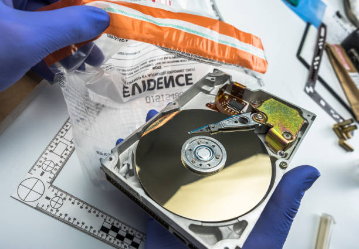
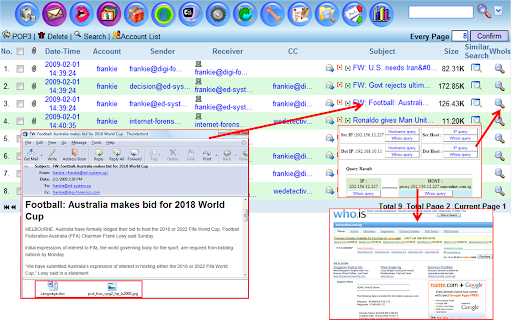

UTILIZZI

I Diversi utilizzi
-Disk forensics
La maggior parte dei casi della digital forensics ricade nella casistica della disk forensics, la branca dell’informatica forense che si occupa dell’acquisizione, estrazione, analisi e valutazione di dati dalle memorie.
In laboratorio, ma anche presso il committente o in luogo indicato, è possibile acquisire tramite i più moderni strumenti in maniera forense, completa e certificata dati digitali presenti in qualsiasi supporto: hard disk, dischi allo stato solido (SSD), computer, notebook, portatili, CD, DVD, Bluray, sistemi di videosorveglianza (CCTV).
Regolata in Italia dalla Legge 48 del 2008, che contiene la Ratifica della Convenzione di Budapest del 2001, l’informatica forense fonda le sue basi su best practice radicate in alcuni standard ISO ed RFC che rappresentano le linee guida per chi esegue perizie informatiche.
Standard ISO, RFC e best practice rappresentano quindi la base che guida l’informatico forense nelle fasi della perizia informatica, dall’acquisizione delle prove a fini legali per utilizzo in Tribunale fino alla presentazione della relazione tecnica forense e alla valutazione delle risultanze.
aaaaaaaa
-Network forensics
La network forensics è la branca dell’informatica forense che si occupa della registrazione ed analisi di eventi che si verificano nelle comunicazioni di rete.
Alcuni esempi:
-Disamina e correlazione dei file di log di uno o più sistemi
aaS
-Ricerca di strumenti atti ad intercettare le trasmissioni di dati (sniffer)
aaS
-Ricerca di strumenti atti ad intercettare le operazioni eseguite dagli uteni sul sistema (remote control program)
aaaaaaaa
-Email forensics
Ogni messaggio di posta elettronica si compone di header, body e attachment, cioè:
-Parte iniziale del messaggio in cui sono contenute le tracce che riconducono al reale mittente
aaS
-Parte del messaggio che viene normalmente visualizzato dall’utente con il contenuto della comunicazione
aaS
-Insieme di file che vengono trasmessi con la comunicazione
aaS
Spesso si commette l’errore di presentare come prova la stampa di una mail, ovvero la rappresentazione su carta del corpo del messaggio. E ancor più è l’errore di chi non contesta l’acquisizione integrale del messaggio. Il laboratorio dispone del know-how e delle attrezzature necessarie all’acquisizione completa ed integra dei messaggi di posta elettronica e fornisce assistenza nei casi in cui si intende contestare un messaggio email.